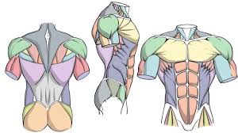
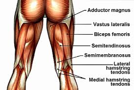

Training your arms is essential for achieving a well-rounded physique. To effectively target your biceps and triceps, it's important to incorporate a variety of exercises into your workout routine. Here are some workouts for both the biceps and triceps: Biceps Workouts: Barbell Curls: Stand with your feet shoulder-width apart, hold a barbell with an underhand grip, and curl the weight up towards your chest.Dumbbell Hammer Curls: Hold a dumbbell in each hand with your palms facing your body, and curl the weights up while keeping your palms facing each other.Preacher Curls: Using a preacher bench, curl a barbell or dumbbells up towards your shoulders while keeping your upper arms supported on the bench.Triceps Workouts:Tricep Dips: Using parallel bars or a sturdy surface, lower your body by bending your arms and then push yourself back up.Tricep Extensions: Hold a dumbbell or a barbell overhead with your arms fully extended, then bend your elbows to lower the weight behind your head.Close-Grip Bench Press: Perform a bench press with your hands placed closer together to target the triceps more effectively.Remember to vary your grips, rep ranges, and weights to keep challenging your muscles and promote growth. Consistency and proper form are key to seeing progress in your arm training. Make sure to warm up before your workouts and cool down afterwards to prevent injury.
Training your upper body is essential for building strength, improving posture, and achieving a balanced physique. Here are some key exercises that target different muscle groups in the upper body: Chest: Bench Press: A classic exercise that primarily works the chest muscles. Push-Ups: A bodyweight exercise that engages the chest, shoulders, and triceps. Back: Pull-Ups: Great for targeting the back muscles, especially the lats. Bent-Over Rows: Helps strengthen the upper back and rear deltoids. Shoulders: Overhead Press: Targets the shoulders, triceps, and upper chest. Lateral Raises: Focuses on the side deltoids for broader shoulders.Arms:Bicep Curls: Works the biceps for arm definition.Tricep Dips: Targets the triceps for stronger arms.Core:Planks: Engages the core muscles to stabilize the body during exercises.Russian Twists: Works the obliques for a stronger core.Remember to maintain proper form, use challenging weights, and gradually increase the intensity of your workouts to see progress in your upper body strength and muscle development.


Working out your lower body is crucial for building strength, improving balance, and enhancing overall athletic performance. By targeting muscles like the quadriceps, hamstrings, glutes, and calves, you can achieve a well-rounded lower body workout routine. Here are some key exercises to include in your lower body workout:Squats: This compound exercise targets multiple muscle groups, including the quadriceps, hamstrings, and glutes. Variations like goblet squats, sumo squats, and jump squats can add variety to your routine.Lunges: Lunges are effective for working the quadriceps, hamstrings, and glutes. Forward lunges, reverse lunges, and walking lunges are great variations to challenge different muscles.Deadlifts: Deadlifts primarily target the hamstrings, glutes, and lower back. It's essential to maintain proper form to prevent injury and maximize benefits.Glute bridges: This exercise isolates the glutes and helps improve their strength and activation. You can perform variations like single-leg glute bridges or add resistance with a barbell or resistance bands.Calf raises: Calf raises target the calf muscles and can be done using body weight, dumbbells, or a calf raise machine. Variations like standing calf raises and seated calf raises can provide a well-rounded calf workout.Leg press: The leg press machine targets the quadriceps, hamstrings, and glutes. Adjusting foot placement on the platform can change the emphasis on different muscle groups.